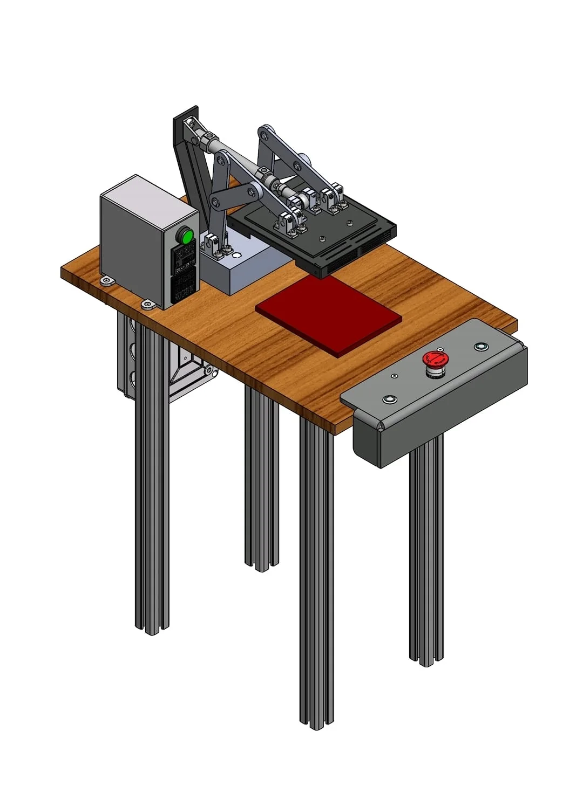

Projects / Case studies
Work that connects design to a working system.
Each case study focuses on the problem, my contribution, the engineering decisions and the evidence produced along the way.

ToF SLAM Mobile Robot
Autonomous mapping platform combining a custom SolidWorks chassis, ToF sensing, embedded control and purpose-built PCBs.

Sense-Oil LevelGuard
Retrofit oil-level monitoring using hydrostatic pressure sensing, embedded alerts and a serviceable enclosure.

Modified Industrial Iron
Pneumatic mechanism, heating controls and a practical workstation developed during industrial training.

FLOD Hopper
A configurable glue-pellet hopper reverse-engineered for reliable feeding and practical machine integration.
Additional exposure
Industrial training also included ultrasonic die and mould work, 3D cup-bonding trials, machine commissioning, PLC exercises, wiring, sensors and production troubleshooting.
These are presented as supporting experience rather than separate headline projects because my contribution varied across design assistance, installation, testing and documentation.